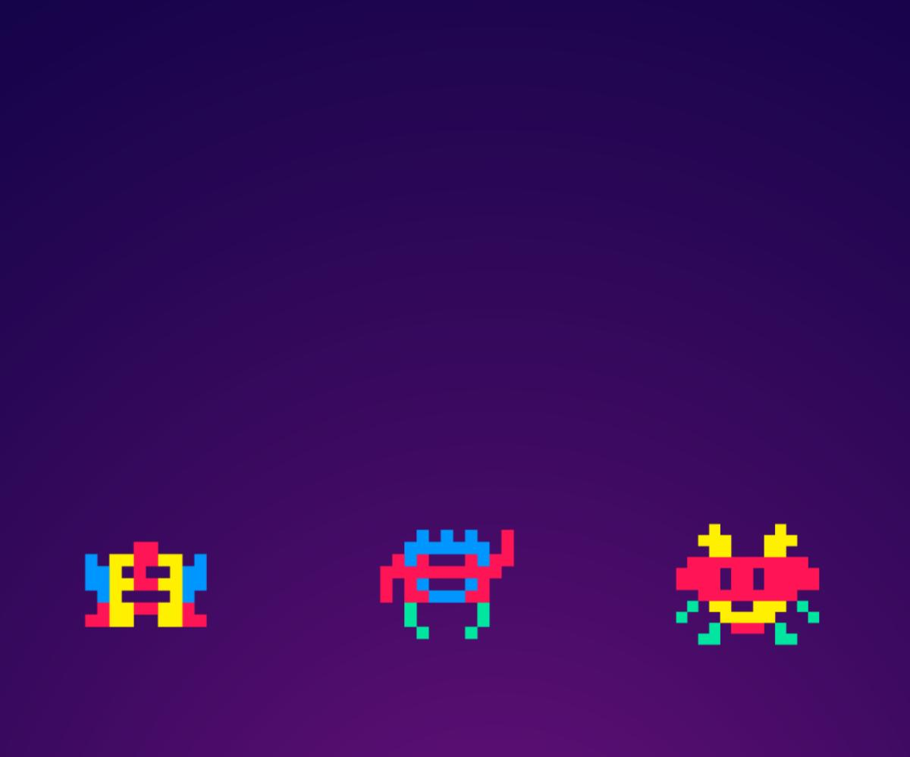
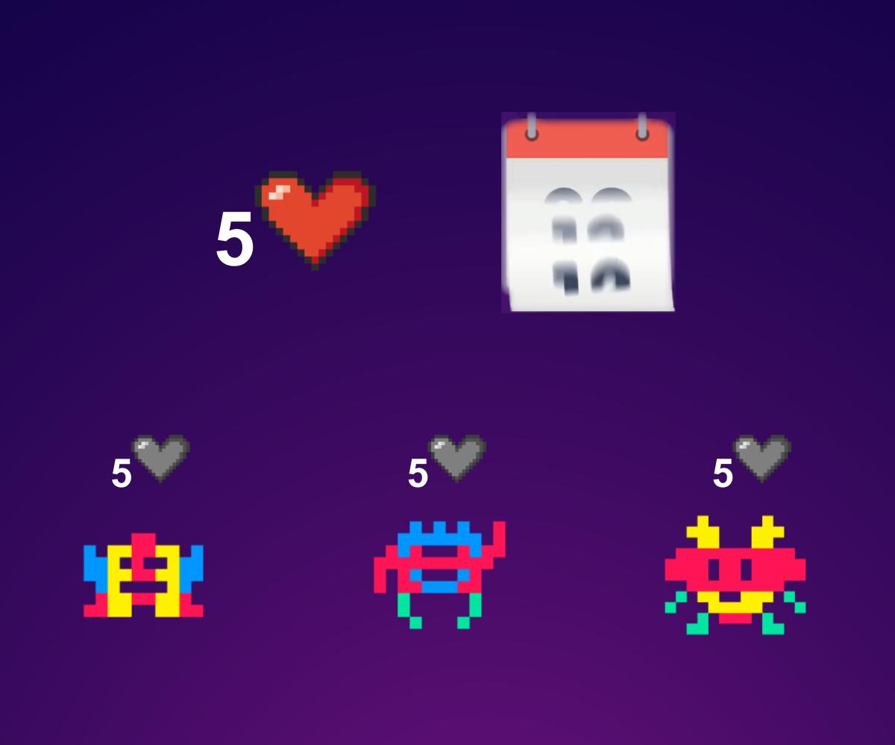
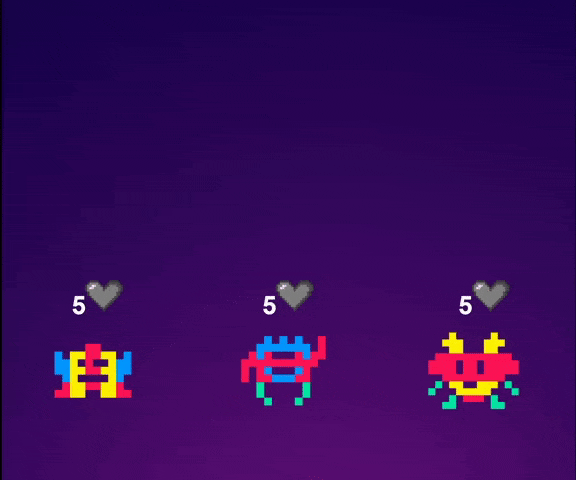
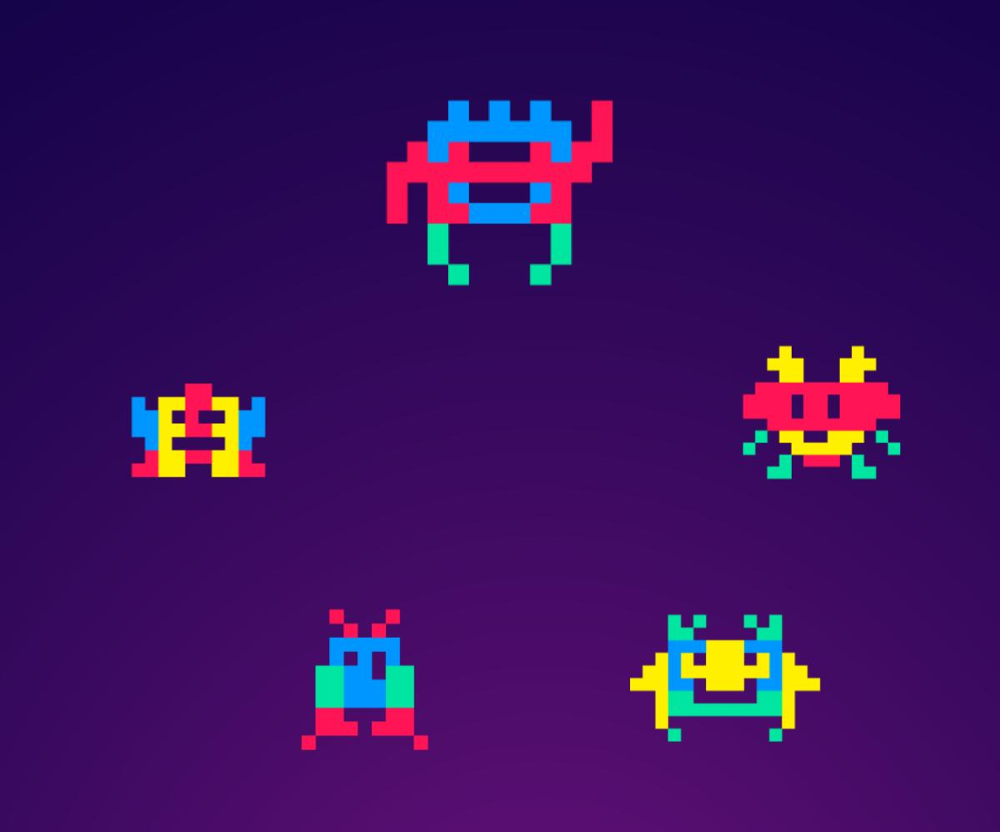

Slow rating system to coordinate community action
KuoriciniDAO is in Pilot Stage!
You are free to play with it and tell us what you think about it!
A Decentralized App for teams
Coworkers, friends, gamers, activist groups, any team working on a project online.You can create your team, or join an existing one.
Teams vote to accept new members.


Each team votes its own rewards!
For example 5 hearts per week, 2 daggers per month, 1 diamond per year.
You cannot hodl these tokens, they reset every period.
You can only donate to other members to reward them for their contribution to the project!
Tokens donated cannot be transferred!
They are your reward, your #soulbound tokens! Build your reputation from the rewards you receive from peers!
Even more: you don’t know who and when sent you the reward. You just receive them at some later time.


From Feedback to Governance?
In current DAOs more tokens=more power. We introduce a different distribution system, based on feedback that changes over time.
Maybe we could use anonymous feedback reward to recognize leadership.
Educating at our Core
Techstation is a non profit organization based in Padua, Italy, dedicated to give entry and mid level programming skills to people that would normally have less opportunity to study and therefore helping them land better jobs.Fair feedback between real people doesn’t need to be instant nor traceable, although smart contract guaranteed.
KuoriciniDAO works on PC and mobile, however at this moment setup on mobile is for more advanced users. Also we didn't find any way to donate to Gitcoin grants from mobile phone.
KuoriciniDAO funziona sia su PC che mobile, pero' al momento il setup per cellulare e' per utenti avanzati. Inoltre non abbiamo trovato un modo per fare la donazione su Gitcoin grants dal cellulare.
KuoriciniDAO funziona sia su PC che mobile, pero' al momento il setup per cellulare e' per utenti avanzati. Inoltre non abbiamo trovato un modo per fare la donazione su Gitcoin grants dal cellulare.